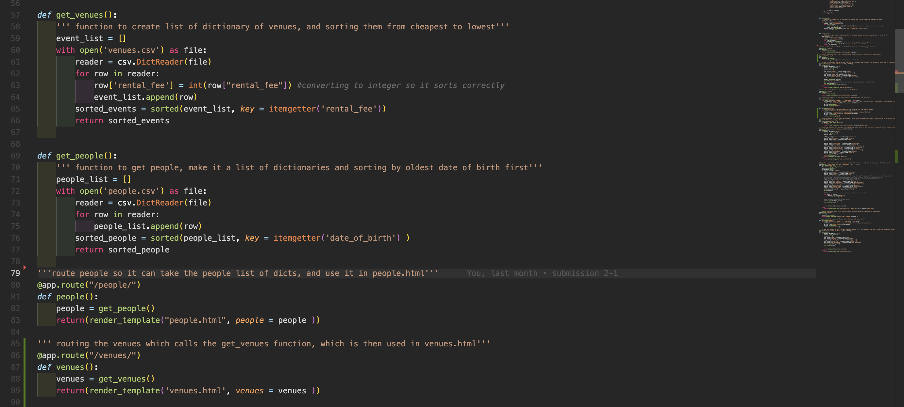
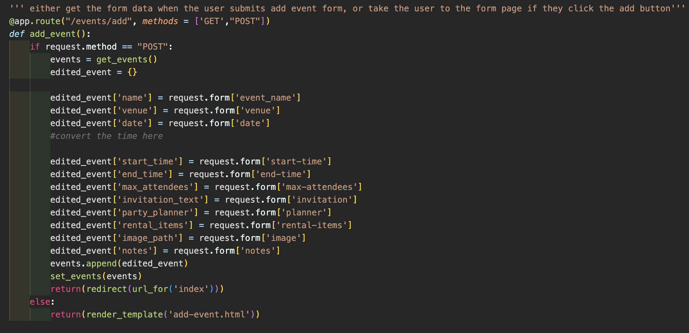
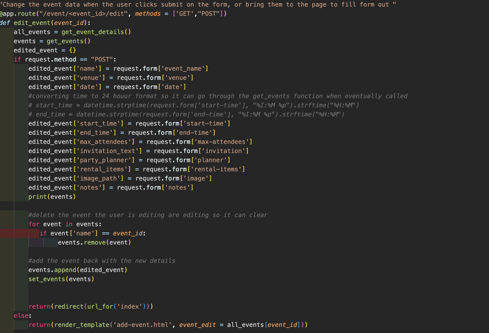
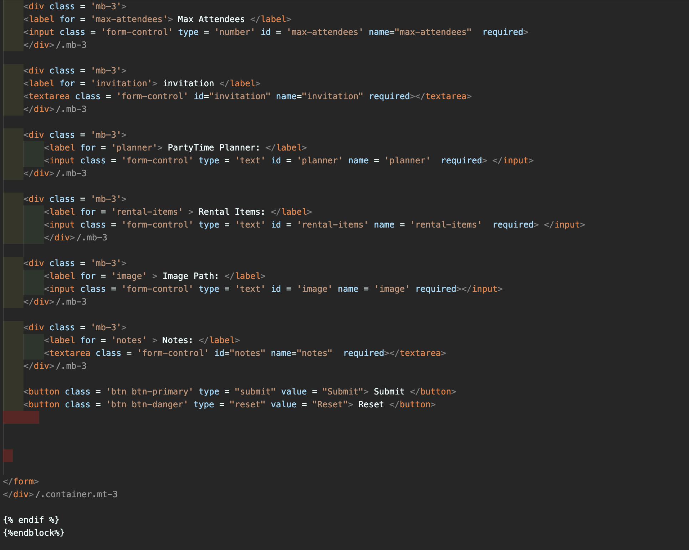
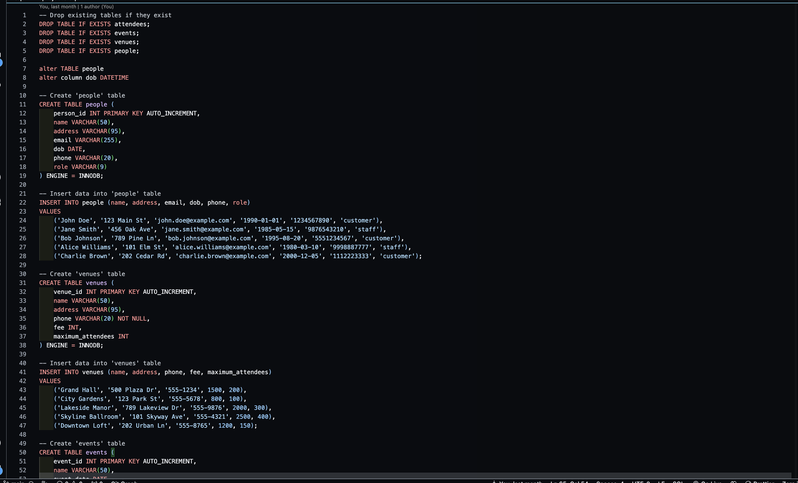
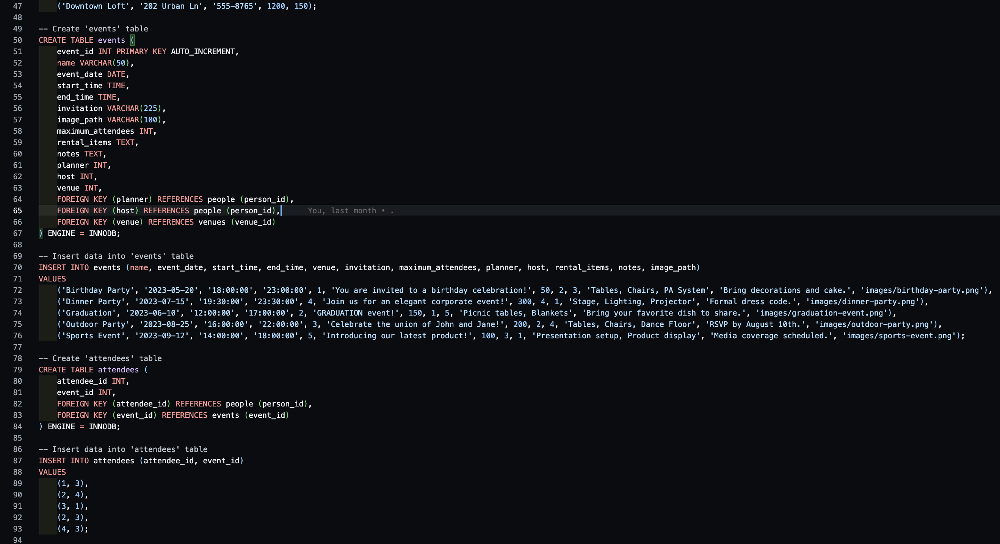
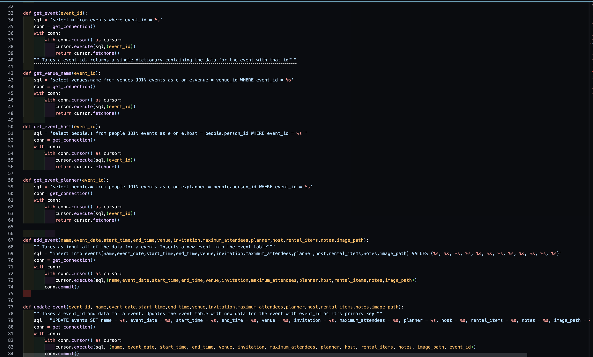
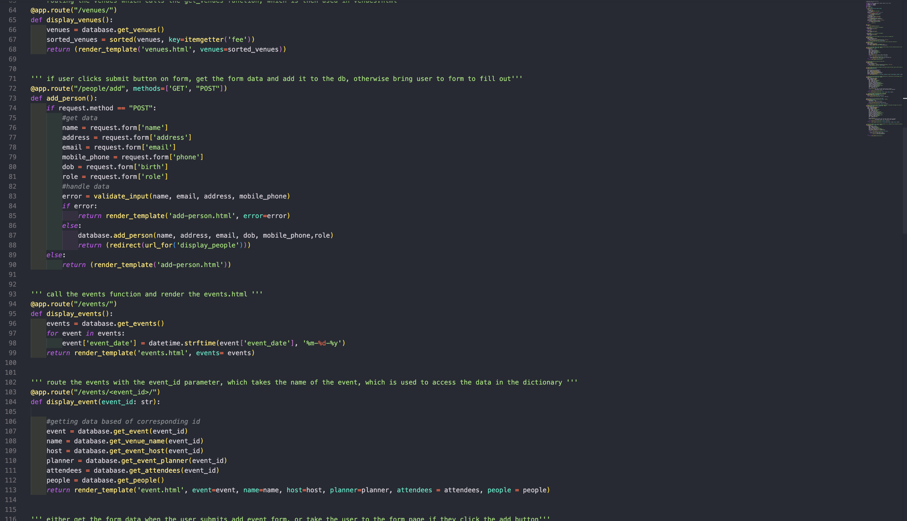

Project Overview
This project is an event management system that allows users to add, edit, and view events through the power of CSV files and a database. In this project, I used Python on the backend and Bootstrap on the front end to create a usable site.
CSV-first workflow
The first phase of the project was strictly powered by CSV files. I created a CSV file for events, venues, and people. I then used Flask to get the data into a list of dictionaries, and used Bootstrap and Jinja to format the data on the front end.

Adding and editing data
The second part of Phase 1 focused on adding and editing events, venues, and people. I created forms in separate HTML files and added routes in the app.py so I could retrieve the data. I created a new temporary dictionary to store user input, then added that dictionary to the total list for each section and used my setter function to rewrite the CSV file with the new data.



Database migration
The second phase of the project used a database instead of CSV files. I had to recreate all of the CRUD operations from Phase 1 in SQL. I used MariaDB hosted on IU servers for the database, and PyMySQL to execute the SQL queries.




What I Learned
- Source Control
- Git Commands
- SQL
- Backend Development
- Bootstrap Styling
- Jinja Formatting